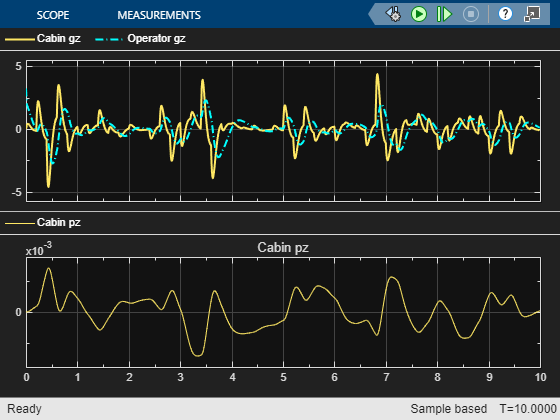

Tractor Seat Suspension
This example shows a model of a seat suspension in a tractor. We can use this model to assess the comfort of the operator.
A vertical spring-damper connecting the seat to the cabin can be enabled or disabled. A passive model of a human with joints is connected to the seat and the steering wheel. The cabin is moved up and down using white noise and we measure the acceleration of the operators head.
(return to Row Crop Tractor Overview)
Contents
Model
Operator Model
The operator is modeled with rigid bodies and joints. Some joints have spring-dampers in them to hold the normal seated position.
Seat Model
This subsystem models the seat suspension as a vertically oriented spring damper.
Simulation Results from Simscape Logging
The plot below shows the vertical acceleration of the operators head and the vertical acceleraton of the cabin. The seat suspension attenuates some of the motion of the cabin, making it more comfortable for the operator.
